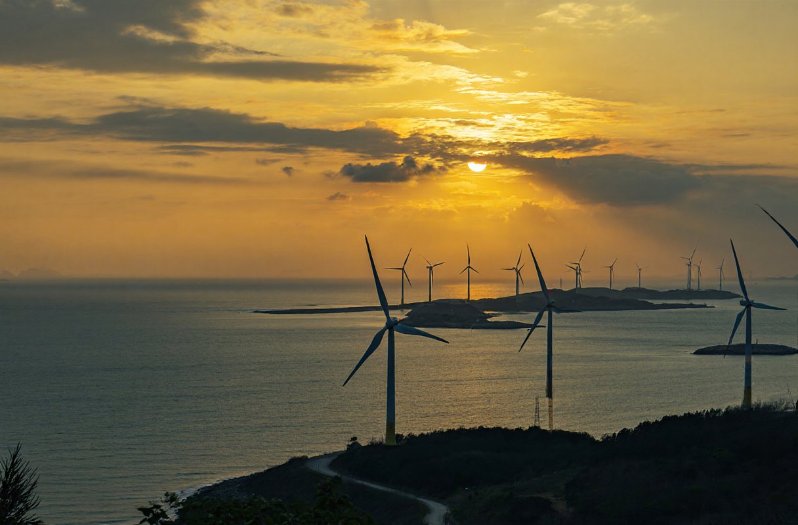
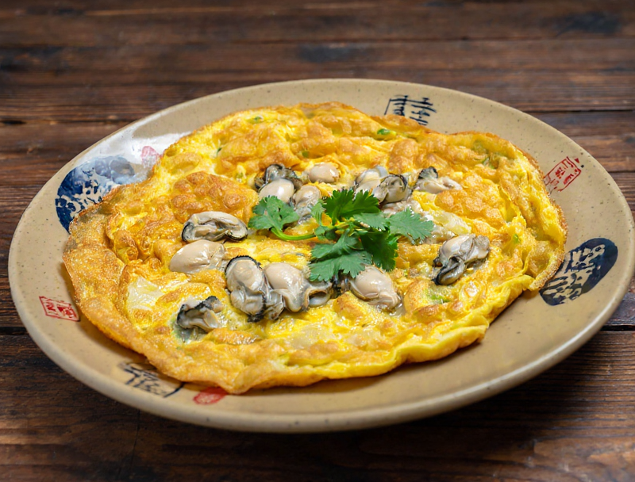
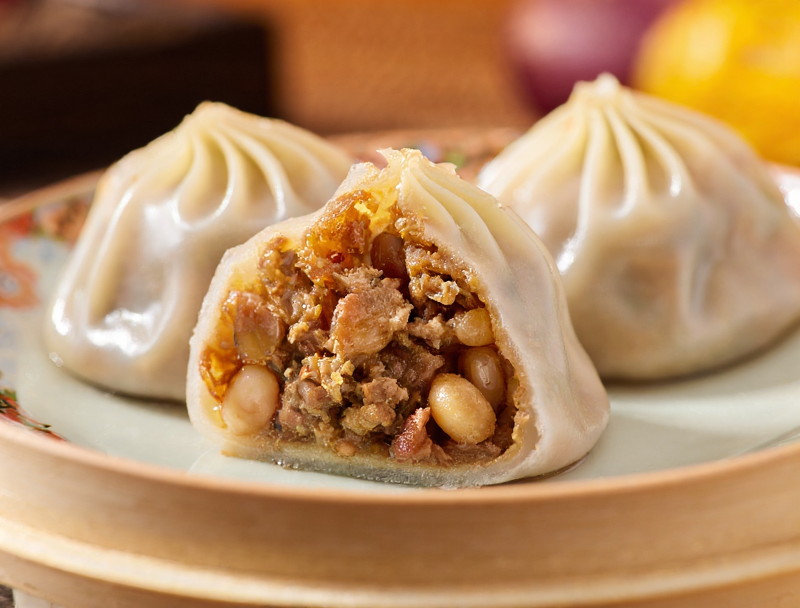
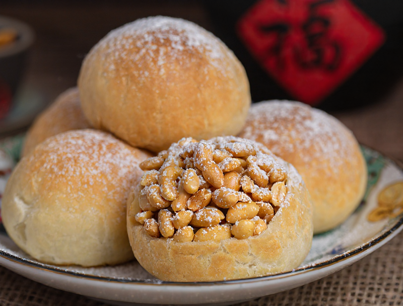
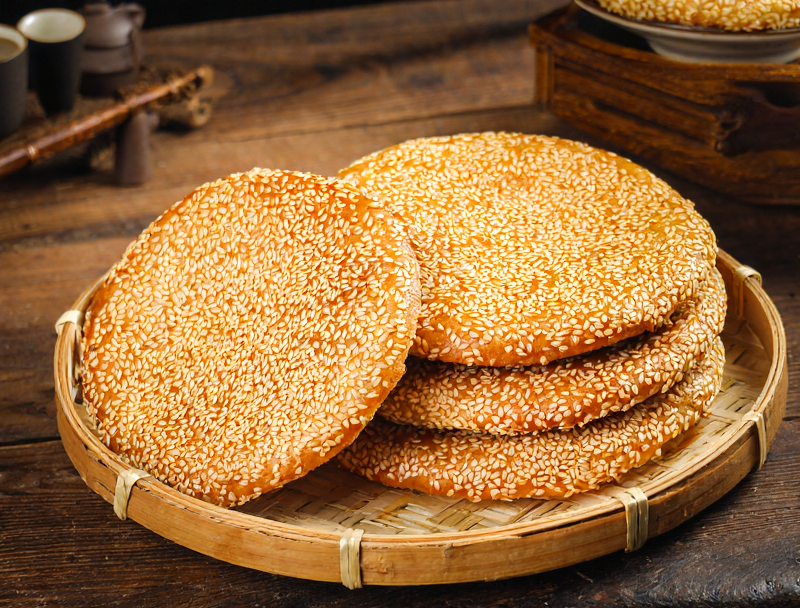
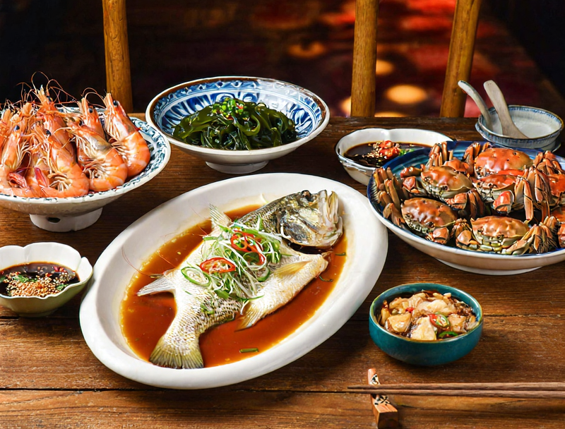
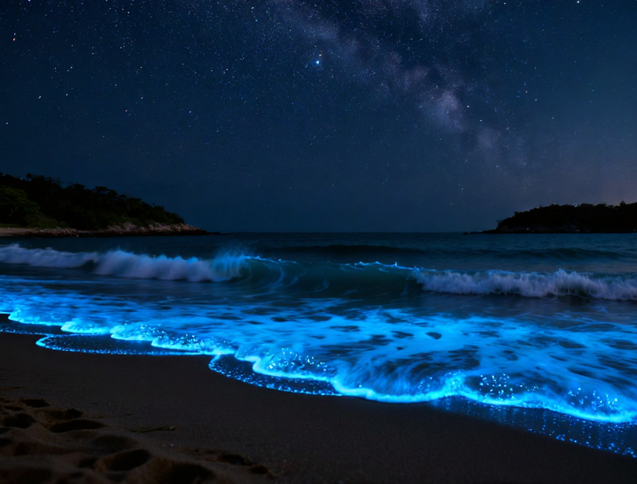
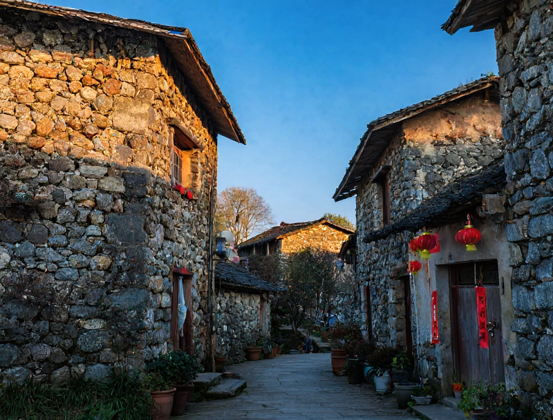
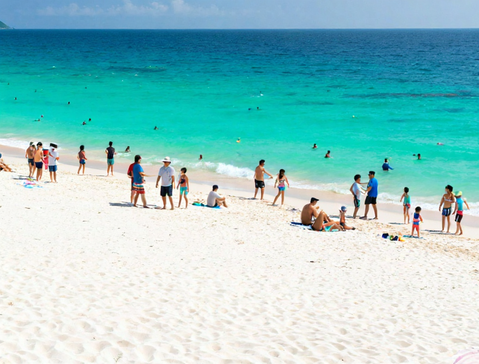
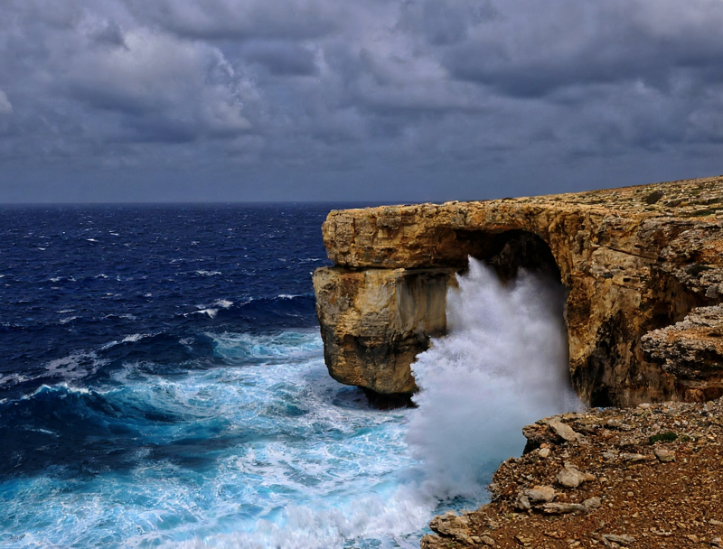

从晋江出发，沿着沈海高速一路向北，当平潭海峡大桥的轮廓浮现在海平面上，你就知道——海岛假期正式开始了。三小时的车程，换一片蔚蓝的天地。
这是属于平潭的高光时刻。从百年石头厝的安静小巷，到长江澳风车田的壮阔海岸线，再到入夜后坛南湾的蓝色奇迹——今天的每一帧都值得按下快门。
放慢脚步，把节奏交给海岛。上午去看惊涛拍岸的仙人井，下午让孩子在酒店水上乐园尽情撒欢，傍晚沿着环岛路吹风兜圈——这才是度假该有的样子。
最后一个早晨，推开窗还是那片蔚蓝。用一顿海景早餐为这趟旅行画上句号。带走的不只是行李箱里的特产，还有海风里的记忆。

鸡蛋液裹着饱满的海蛎，在铁板上滋滋作响。外皮煎到金黄微焦，一口咬下去，是大海的鲜甜和鸡蛋的醇香在舌尖交融。平潭人的早餐、夜宵、待客菜——海蛎煎从不缺席。

地瓜粉揉成半透明的薄皮，包进鲜虾、紫菜、猪肉调成的馅料，捏成元宝形。蒸熟后皮子 Q 弹透亮，蘸上平潭特制的辣酱，这是逢年过节每家餐桌上必有的主角。名字是祝福，味道是乡愁。
年糕切成薄片，和虾仁、鱿鱼、蛏子、蚬子等八种海鲜一起大火翻炒。年糕吸满了海鲜的鲜汁，每一片都是大海的馈赠。这道菜考验的是火候——猛火快炒，镬气十足。

花生碾碎拌上白糖，裹进糯米粉团里，搓成圆圆的小球。炸至金黄，咬开是流沙般的花生馅。平潭人在婚宴上必备这道甜点，吃的不只是甜，还有对天长地久的期盼。

据说这是戚继光抗倭时士兵随身携带的干粮，故名「光饼」。面团贴在炭火烤炉内壁，烤至表面焦黄、芝麻噼啪作响。外壳酥脆，内里松软，趁热夹上一片卤肉或煎蛋——这就是福建人从小吃到大的味道。
平潭的紫菜是海边礁石上野生的，日晒后紫黑发亮。和米饭一起焖煮，紫菜的鲜味渗进每一粒米。掀开锅盖的那一刻，是大海和炊烟交织的味道。配一碟酱油花生米，简单到奢侈。
用新鲜马鲛鱼去骨捶打成泥，加薯粉揉搓成丸。煮出来白白胖胖，弹牙 Q 弹，一口咬下是纯粹的鱼鲜。鱼面则是鱼泥擀成的薄面，入口即化。清汤一碗，鲜到掉眉毛。

石斑鱼清蒸，花蟹白灼，大虾盐焗，蛏子葱姜——平潭的海鲜大排档不讲摆盘，讲的是一个「鲜」字。下午渔船靠岸，晚上就在你的餐桌上。啤酒配海鲜，海风当空调，这才是海岛夜晚的正确打开方式。

当夜幕完全降临，退潮的海水开始泛起幽蓝的微光——那是海中的甲藻受到扰动后释放的荧光。平潭人叫它「蓝眼泪」，仿佛大海在月光下无声地哭泣。站在坛南湾的沙滩上，赤脚踩进浅水，每一步都踏出一圈蓝色的涟漪。抬头是星空，低头是星河——这一刻，你分不清天与海的边界。
沿着长江澳的海岸线，数十座白色风力发电机一字排开，像守望大海的巨人。日落时分是这里最魔幻的时刻——落日把海面染成金红色，风车的剪影在暮色中缓缓旋转。找一块礁石坐下，什么都不用做，看风车转，看太阳落，看天空从金色变成紫色再变成深蓝。

走进北港村，时间仿佛在石墙上停驻。这些用花岗岩堆砌的百年老屋，被海风打磨出温润的光泽。窄窄的巷子里，石墙上爬满了薜荔，有些老屋被改造成了咖啡馆和民宿，但推开门，依然是百年前渔村的格局。阳光从石缝里漏进来，在地上画出明暗交错的线条。

坛南湾拥有平潭最细腻的白沙滩。脱掉鞋子走在上面，沙子细得像面粉，被海水打湿后变成一面镜子，倒映着天空和云朵。这里是白天戏水、傍晚看日落、入夜追蓝眼泪的全能选手。带上铲子和水桶，和孩子一起挖沙堡——这是海边假期最经典的打开方式。
仿明清闽南建筑群落，红砖燕尾脊，石板路蜿蜒。虽是新建的文旅项目，但走在其中，飞檐翘角和雕花窗棂仍能唤起对闽南古厝的想象。夜晚的古城更有味道，灯笼亮起，石板路泛着暖光。

海浪年复一年地拍打礁石，在悬崖上凿出了一个天然的海蚀竖井。站在崖顶往下望，海水从洞底涌入，撞击岩壁发出轰鸣，白色的浪花腾空而起。这是大自然力量最直观的展示——温柔的水，用时间雕刻出了坚硬的石。
当你的车驶上平潭海峡大桥，两侧是一望无际的蓝色海面，桥塔在前方不断靠近又退后。这座全长超过11公里的跨海大桥，是你进入平潭的第一道风景。天气好的时候，远处的海岛若隐若现，像水墨画里的留白。
国惠酒店自带的水上世界，滑梯、水枪、喷泉……小朋友进去就不想出来。大人可以在旁边的躺椅上晒太阳，偷得半日清闲。
室内游乐天地，积木、滑梯、海洋球。下雨天的完美备选，也是午后太阳最毒时的避暑圣地。
坛南湾的沙细到可以做沙雕。挖条护城河、堆座城堡、捡几个贝壳——这些简单的快乐，长大后会成为最珍贵的回忆。
退潮后的礁石区是天然的探险乐园。翻开石头找小螃蟹，在水洼里发现海星，捡到一枚完整的贝壳时孩子眼里的光——这是课本教不了的自然课。
租一辆亲子自行车，沿着海边慢慢骑。海风吹过脸颊，路边是蓝色的大海和绿色的木麻黄。不赶路的时候，风景自己会来找你。
带孩子去海边看「大海的眼泪」——这是一堂最浪漫的自然科普课。当蓝光在脚边亮起，孩子会记住这个夜晚很久很久。
影响：福建沿海风力增大，部分景区可能临时关闭
建议：实时关注台风路径变化，保持行程灵活
PINGTAN ISLAND SPECIAL ISSUE · 2026 AUGUST
A family road trip guide · 平潭亲子自驾攻略
Made with ❤️ for 雨鑫一家